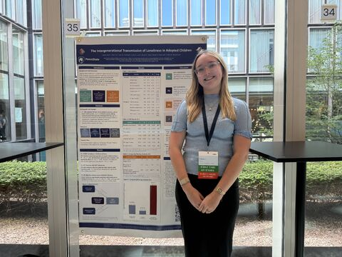
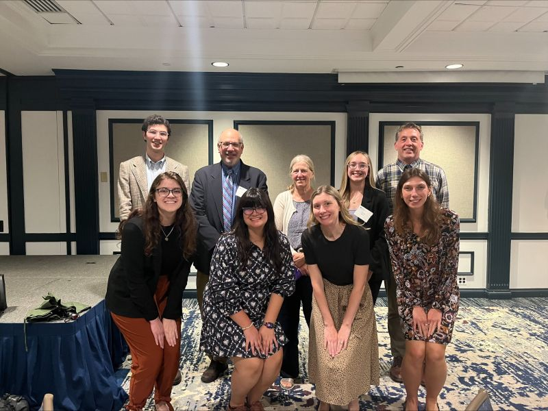
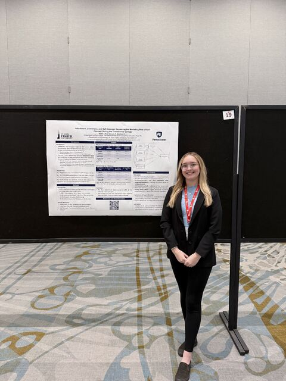
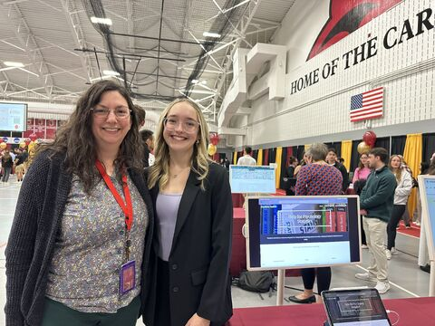
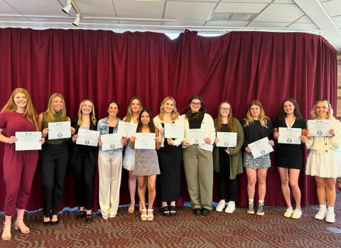

I spend as much time thinking about research design and statistical modeling as I do about behavior and what the findings actually mean for the people they're meant to help. My doctoral research asks why people think, feel, and act the way they do, and how that changes over time and life stages.

How parent-child relationships and genetic and environmental processes shape the emergence of loneliness across development and its transmission from parents to children, using behavior genetic designs.
Identifying the individual and contextual factors that influence risk and variation in loneliness.
For the most up-to-date list of publications, please visit my Google Scholar profile.
First-year students' loneliness was tied to the relationship habits they brought to college, partly through how they saw themselves, and together these explained 43% of the differences in loneliness.
Current Psychology, 45, 1356.
Loneliness is of special concern for the college-age population since it is prevalent during the transition to college. Attachment style is among the strongest known correlates of loneliness, but why insecurely attached students feel lonelier is unclear. The mediators identified so far, including self-esteem and self-efficacy, are all self-relevant beliefs, which points toward a broader construct that has not been tested. Because attachment is organized around internal working models of the self, and because self-concept shapes how students interpret and approach social ties and is also related to loneliness, self-concept is a plausible mechanism. The present study examined the relationship between loneliness and attachment styles, and self-concept as a mediating factor in the relationship. 1,296 students (Mage = 24.5, SDage = 8.33) completed an online survey reflecting on their first year of college. Results indicated that secure and dismissing-avoidant attachment styles were negatively correlated with total loneliness, whereas avoidant and anxious/ambivalent attachment were positively correlated. Structural equation modeling indicated that self-concept partially mediated the association between attachment and loneliness; the indirect effect of secure attachment through self-concept was statistically significant, b = −0.38, 95% CI [−0.49, −0.29]. Together, the predictors accounted for 43% of the variance in total loneliness. These findings point to self-concept as an individual characteristic that may be associated with lower loneliness and a point of intervention during the transition to college.
Cognitive Development.
The present study evaluated unstructured play with blocks as a method of understanding children's informal spatial skills to establish a link with direct cognitive assessment (e.g., formal spatial skills) in contrast to prior research using semi-structured paradigms. Participants were 110 socioeconomically diverse preschoolers (56% male, M age = 58 mos., range = 4 yrs. 1 mo.–6 yrs., 0 mos.) filmed in 55 dyads during play with wooden unit blocks. Children were coded for informal spatial skills using eight spatial configurations in block building (e.g., stacking, symmetry, tiers) and directly assessed on formal spatial skills with the Spatial Skills and Transformation Task (Levine et al., 1999). Block structure size was measured by area and volume. Informal and formal spatial skills were significantly related (b = .11, p = .011). Children with stronger informal (b = .42, p < .001) and formal (b = .99, p = .014) spatial skills built larger, more complex block structures. Findings suggest that prompting children to build large, spatially complex block structures may support broad spatial development.
Soaring: A Journal of Undergraduate Research, 2025(1), Article 3.
Loneliness is a pervasive phenomenon among college students globally, which has been previously explored in qualitative research. "Friendsickness," focused on the preoccupation with lost or changed pre-college friendships, is linked to heightened social concerns, discrepancies between expectations and experiences, and loneliness in college (Paul & Brier, 2001). Additionally, pre-college romantic and familial relationships can impact first-year college students' social adjustment and loneliness levels (Calderon Leon et al., 2022; Paul et al., 1998). Guided by social constructivist theory, this phenomenological study explores the lived experiences of eight undergraduate students at a small liberal arts college in the Northeast United States. This study involved conducting semi-structured interviews to examine the participants' experiences with loneliness, the impact on pre-college relationships, and successes and challenges in forming and maintaining relationships during their transition. Our results reveal that loneliness is a significant issue among first-year students, impacting their emotional and social adjustment and, occasionally, their psychological and physical well-being. Loneliness often stems from the inability to balance maintaining pre-existing relationships and forming new ones, compounded by isolation and roommate conflicts. However, many students succeed in finding connections through shared interests or co-rumination, as well as in strengthening family bonds. Through a social constructivist lens, these experiences reflect the tension between maintaining pre-existing values and relationships while adapting to new social and cultural expectations in higher education. Therefore, loneliness can result from identities and connections being heavily negotiated during the transition to college.
Eye on Psi Chi, 30(1).
In what ways do students struggle with their bodies on college campuses? For most, the immediate struggle that comes to mind is eating disorders, and with good reason: Recent data estimates that 28% of college students are at eating disorder risk (Daly & Costigan, 2022). However, one struggle that is often overlooked is that faced by students with larger bodies. What do you do when the desk in the classroom is too small to maneuver your body into? Do you feel like you belong on campus when the collegiate apparel in the bookstore only goes up to a size XL? And that's nothing to say of the regular negative judgment that higher weight people receive everywhere, on and off campus alike. Whether eating disorders, weight stigma, body image concerns, or more, bodies occupy a considerable amount of college students' attention.
Soaring: A Journal of Undergraduate Research, 2024(2), Article 4.
Provost's Award for Best Paper, St. John Fisher University (2025)Loneliness is not just a phenomenon observed in clinical practice but is a core issue in the study of mental disorders more broadly — psychopathology. Loneliness is the key to the study of all mental disorders as many have shown significant relation to loneliness either as a risk factor for developing or maintaining the disorder, or as a co-occurring condition of the disorder. In other words, loneliness is both a cause and a consequence of mental illness. Specifically, this review explores the relationships of loneliness in cognitive disorders (Alzheimer's disease, schizophrenia, and major depressive disorder), social disorders (social anxiety disorder, autism spectrum disorder, and reactive attachment disorder), and personality disorders (avoidant personality disorder, narcissistic personality disorder, obsessive-compulsive personality disorder). Overall, loneliness is an under-researched concept, yet it plays a nucleus role in many psychological disorders. Recognizing the role of loneliness within psychopathology is crucial for improving diagnostic accuracy, as well as developing more precise clinical interventions and treatment strategies.
Soaring: A Journal of Undergraduate Research, 2024(1), Article 2.
The cliché of a college student surviving off ramen noodles sheds light on a deeper issue — high rates of food insecurity among undergraduate college/university students in the United States. There have been countless studies in recent years exploring the hidden causes of why an estimated 40% of students experience food insecurity as of 2022. These studies conclude three main reoccurring factors causing these high rates: costs, accessibility, and demographic characteristics. Food insecurity rates are important for higher education officials to address due to the countless physical and mental health, academic, and equity implications for the students.
No publications match your search.



